Visual Studio Code: мощное руководство пользователя
Эта статья написана для начинающих пользователей, которые могут впервые использовать Visual Studio Code. VS Code, как известно, считается «легковесным» редактором кода. По сравнению с редакторами с полной интегрированной средой разработки (IDE), которые занимают гигабайты дискового пространства, VS Code использует менее 200 МБ при установке.
Несмотря на термин «легкий», Visual Studio Code предлагает огромное количество функций, которые продолжают расти и улучшаться с каждым новым обновлением. В этом руководстве мы рассмотрим наиболее популярные функции. У каждого программиста есть свой собственный набор инструментов, который они обновляют всякий раз, когда обнаруживаются новые рабочие процессы. Если вы хотите изучить каждый инструмент и функцию VS Code, ознакомьтесь с их официальной документацией. Кроме того, вы можете отслеживать обновления для новых и улучшенных функций.
Предпосылки
Чтобы следовать этому руководству, вы должны владеть хотя бы одним языком программирования и фреймворком. Вы также должны быть знакомы с системой контроля версией git. Вам также необходимо иметь учетную запись на платформе удаленного хранилища, такой как GitHub. Я рекомендую вам настроить SSH Keys для подключения к вашему удаленному репозиторию.
Мы будем использовать минимальный проект Next.js для демонстрации возможностей VS Code. Если вы новичок в этом, не беспокойтесь, так как фреймворк и используемый язык не являются предметом данного руководства. Преподаваемые здесь навыки можно перенести на любой язык и фреймворк, с которыми вы работаете.
Немного истории
Если вы новичок в программировании, я рекомендую вам начать с простого текстового редактора, такого как Windows NotePad. Это самый простой текстовый редактор, который не предлагает никакой помощи. Основным преимуществом его использования является то, что он заставляет вас запоминать синтаксис языка и делать свои собственные отступы. Как только вы освоитесь с написанием кода, следующим логическим шагом будет обновление до более качественного текстового редактора, такого как NotePad++ . Он предлагает немного важной помощи при кодировании с такими функциями, как раскраска синтаксиса, автоматическое отступление и базовое автозаполнение. При обучении программированию важно не перегружаться информацией и помощью.
Как только вы привыкли к лучшему опыту написания кода, пришло время обновиться. Не так давно это были полностью интегрированные среды разработки:
Эти платформы обеспечивают полный рабочий процесс разработки, от написания кода до тестирования и развертывания. Они содержат множество полезных функций, таких как анализ кода и выделение ошибок. Они также содержат гораздо больше функций, которые многие разработчики не использовали, хотя они были необходимы для некоторых команд. В результате эти платформы заняли много места на диске и не запустились. Многие разработчики предпочитали использовать передовые текстовые редакторы, такие как emacs и vim, для написания своего кода.
Вскоре появился новый набор независимых от платформы редакторов кода. Они были легкими и обеспечивали множество функций, которые были в основном эксклюзивными для IDE. Я перечислил их ниже в порядке их выпуска:
Разработчики Mac имели доступ к TextMate, который был выпущен в октябре 2004 года. Система фрагментов кода, используемая всеми вышеперечисленными редакторами, была основана на TextMate. Воспользовавшись всеми из них, я почувствовал, что появившийся после этого редактор значительно улучшил текущий. Согласно опросу разработчиков, проведенному Stack OverFlow в 2019 году, Visual Studio Code является самой популярной средой разработки кода с 50,7% использования. Visual Studio IDE занимает второе место, а NotePad++ - третье.
Достаточно истории и статистики на данный момент. Давайте углубимся в то, как использовать функции кода Visual Studio.
Настройка и обновления
Установщик пакета кода Visual Studio занимает менее 100 МБ и потребляет менее 200 МБ при полной установке. Когда вы посещаете страницу загрузки, ваша ОС будет автоматически обнаружена, и будет выделена правильная ссылка для загрузки.
Обновление VS Code очень просто. Он отображает уведомление при каждом выпуске обновления. Пользователям Windows необходимо щелкнуть уведомление, чтобы загрузить и установить последнюю версию. Процесс загрузки происходит в фоновом режиме, пока вы работаете. Когда он будет готов к установке, появится запрос на перезагрузку. Нажав на это, вы установите обновление и перезапустите VS Code.
Для дистрибутивов на основе Ubuntu, нажав на уведомление об обновлении, вы просто откроете веб-сайт, на котором вы сможете загрузить последнюю версию установщика. Гораздо проще - просто выполните sudo apt update && sudo apt upgrade -y. Это обновит все установленные пакеты Linux, включая Visual Studio Code. Причина этого заключается в том, что VS Code добавил репо в реестр репозитория при первоначальной установке. Вы можете найти информацию о репо по этому пути: /etc/apt/sources.list.d/vscode.list.
Пользовательский интерфейс
Давайте сначала познакомимся с пользовательским интерфейсом:
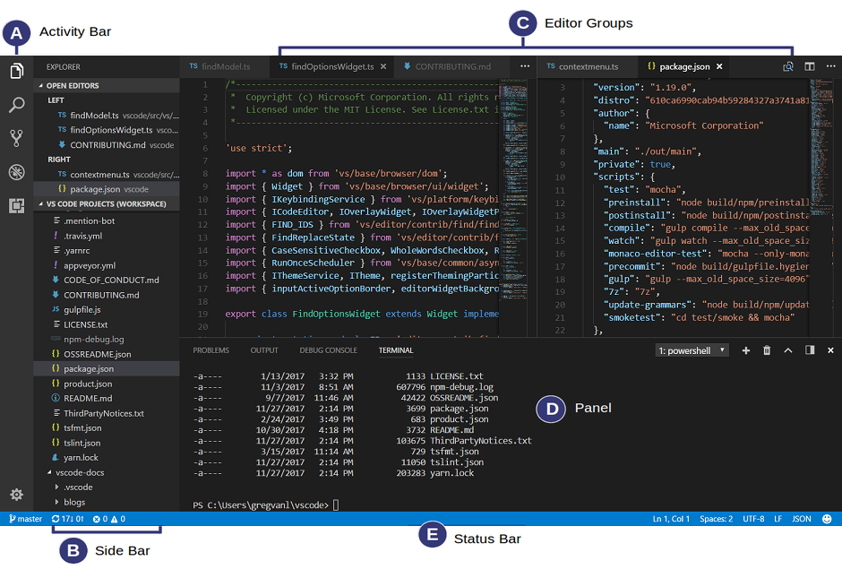
Пользовательский интерфейс Visual Studio Code разделен на пять основных областей, которые вы можете легко настроить.
Также есть верхняя строка меню, где вы можете получить доступ к системе меню редактора. Для пользователей Linux встроенным терминалом по умолчанию, вероятно, будет оболочка Bash. Для пользователей Windows это PowerShell. К счастью, внутри выпадающего списка терминала находится селектор оболочки, который позволит вам выбрать другую оболочку. Если установлено, вы можете выбрать любой из следующих:
Работа с проектами
В отличие от полноценных IDE, Visual Studio Code не обеспечивает создание проектов и не предлагает шаблоны проектов традиционным способом. Он просто работает с папками. На моей машине для разработки Linux я использую следующий шаблон папок для хранения и управления своими проектами:
/home/{username}/Projects/{company-name}/{repo-provider}/{project-name}
Папка Projects, что я имею в виду, как в рабочей области. Как внештатный автор и разработчик, я разделяю проекты на основе того, в какой компании я работаю, и какой репо я использую. Для личных проектов я храню их под своим вымышленным «названием компании». Для проектов, с которыми я экспериментирую в учебных целях и которые я не собираюсь долго хранить, я просто буду использовать имя, например play или tuts в качестве замены {repo-provider}.
Если вы хотите создать новый проект и открыть его в VS Code, вы можете использовать следующие шаги. Откройте терминал и выполните следующие команды:
$ mkdir vscode-demo
$ cd vscode-demo
# Launch Visual Studio Code
$ code .
Вы также можете сделать это в проводнике. При доступе к контекстному меню мыши вы сможете открыть любую папку в VS Code.
Если вы хотите создать новый проект, связанный с удаленным репо, проще создать его на сайте - например, GitHub или BitBucket.
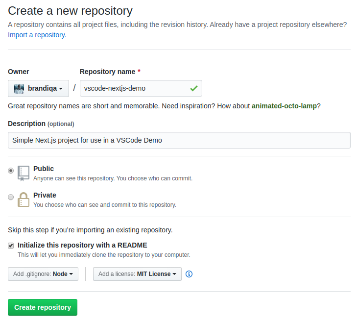
Обратите внимание на все поля, которые были заполнены и выбраны. Далее перейдите в терминал и выполните следующее:
# Navigate to workspace/company/repo folder
$ cd Projects/sitepoint/github/
# Clone the project to your machine
$ git clone git@github.com:{insert-username-here}/vscode-nextjs-demo.git
# Open project in VS Code
$ cd vscode-nextjs-demo
$ code .
Как только редактор будет запущен, вы можете запустить встроенный терминал с помощью сочетания клавиш Ctrl+~ (тильда). Используйте следующие команды для генерации package.json и установки пакетов:
# Generate `package.json` file with default settings
$ npm init -y
# Install package dependencies
$ npm install next react react-dom
Затем откройте package.json и замените раздел scripts следующим:
"scripts": {
"dev": "next",
"build": "next build",
"start": "next start"
}
Окно кода Visual Studio должно выглядеть следующим образом:
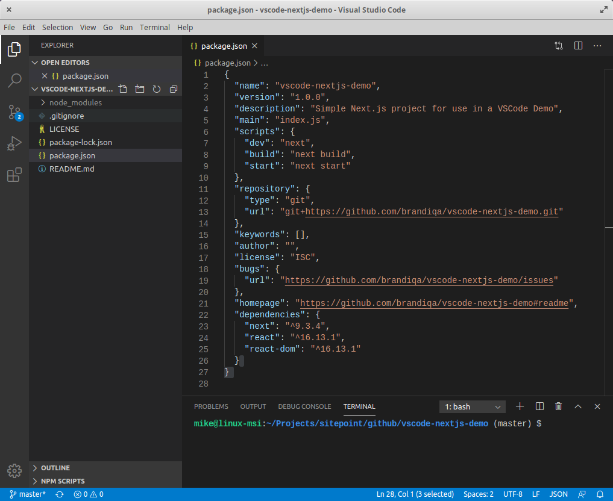
Прежде чем мы рассмотрим следующий раздел, я хотел бы упомянуть, что VS Code также поддерживает концепцию многокорневых рабочих пространств. Если вы работаете со связанными проектами - front-end, back-end, docs и т.д. - вы можете управлять ими в одном рабочем пространстве в одном редакторе. Это облегчит синхронизацию вашего исходного кода и документации.
Контроль версий с помощью Git
Visual Studio Code поставляется со встроенным менеджером контроля версий Git. Он предоставляет пользовательский интерфейс, где вы можете комментировать, фиксировать, создавать новые ветви и переключаться на существующие. Давайте передадим изменения, которые мы только что сделали в нашем проекте. На панели действий откройте панель управления источником и найдите кнопку «Stage All Changes plus», как показано ниже.
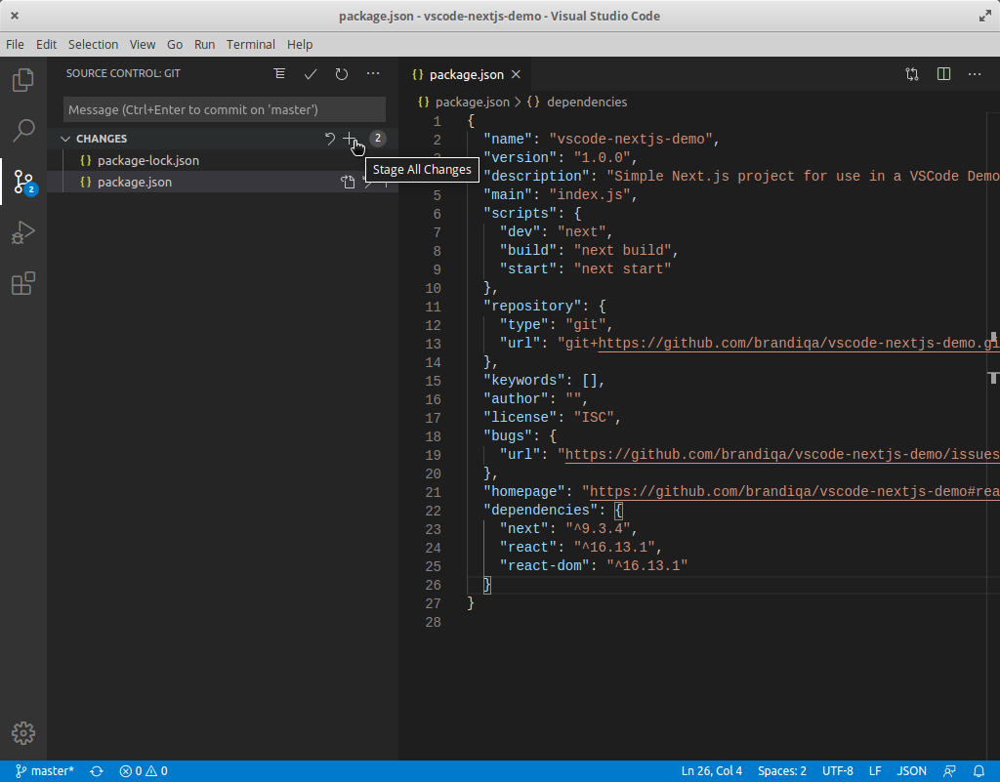
Нажмите здесь. Затем введите сообщение фиксации «Installed next.js dependencies», а затем нажмите кнопку Commit в верхней части. Имеет значок галочки. Это передаст новые изменения. Если вы посмотрите на статус, расположенный внизу, вы увидите различные значки статуса в левом углу. 0 ↓ означает, что из удаленного репозитория нечего вытаскивать. 1 ↑ означает, что у вас есть один коммит, который вам нужно отправить на удаленное репо. При нажатии на него отобразится подсказка о действии. Нажмите OK для pull и push. Это должно синхронизировать ваше локальное репо с удаленным репо.
Чтобы создать новую ветку или переключиться на существующую ветку, просто нажмите на название ветки master в строке состояния в левом нижнем углу. Это выведет филиальную панель для вас, чтобы принять меры.
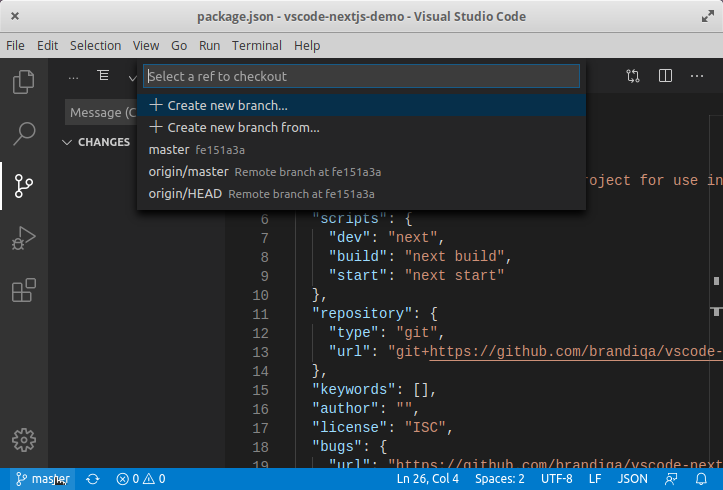
Проверьте следующие расширения для еще лучшего опыта работы с Git:
Поддержка другого типа SCM, такого как SVN, может быть добавлена путем установки соответствующего расширения SCM с рынка.
Создание и запуск кода
На панели действий вернитесь к панели обозревателя и с помощью кнопки «New Folder» создайте папку pages в корне проекта. Выберите эту папку и используйте кнопку New File, чтобы создать файл pages/index.js. Скопируйте следующий код:
function HomePage() {
return <div>Welcome to Next.js!</div>
}
export default HomePage;
На панели Explorer вы должны увидеть раздел «NPM Scripts» . Разверните это и наведите курсор мыши dev. Кнопку run (значок воспроизведение) появится рядом с ним. Нажмите на него, и он запустит сервер Dev.js внутри встроенного терминала.
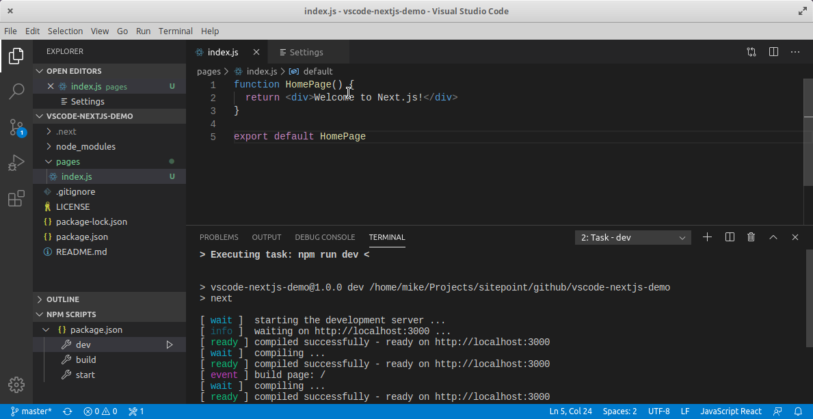
Это должно занять несколько секунд. Используйте Ctrl + Click на URL http://localhost:3000, чтобы открыть его в браузере. Страница должна успешно открыться с сообщением «Welcome to Next.js!». В следующем разделе мы рассмотрим, как мы можем изменить настройки Visual Studio Code.
Настройки пользователя и рабочей области
Чтобы получить доступ к настройкам параметров VS Code, используйте сочетание клавиш Ctrl+,. Вы также можете получить к нему доступ через команду меню следующим образом:
По умолчанию должен появиться графический интерфейс редактора настроек. Это помогает пользователям легко вносить изменения в настройки, поскольку доступны тысячи редактируемых настроек. Редактор настроек предоставляет пользователю понятные имена и описания, что делает каждый параметр. Кроме того, связанные параметры были сгруппированы вместе, и есть панель поиска для поиска определенного параметра.
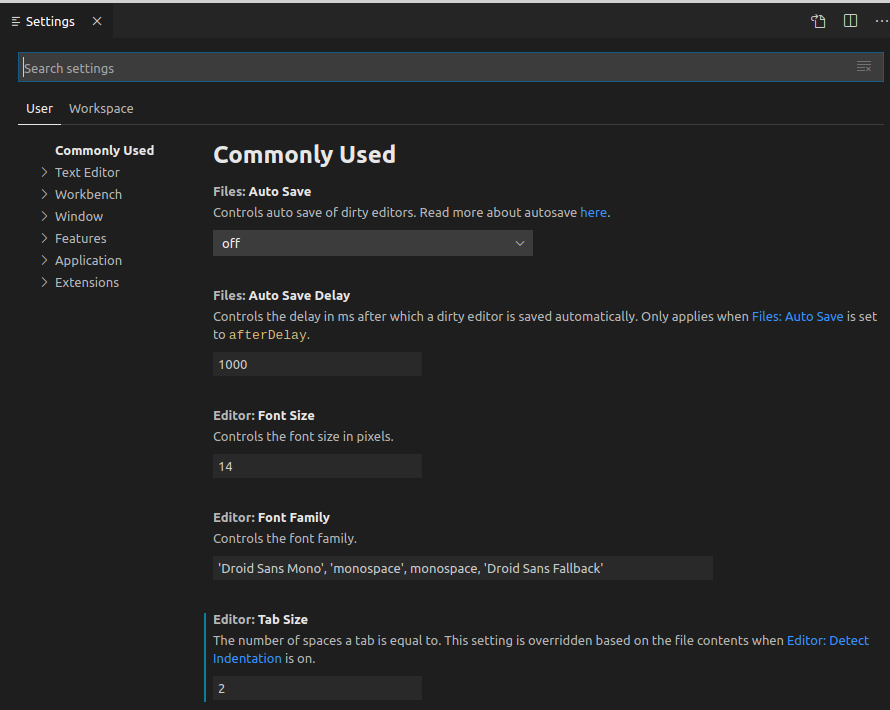
При изменении настроек с помощью редактора обратите внимание на активную область сверху. Обратите внимание, что не все настройки можно настроить через графический интерфейс. Для этого вам нужно отредактировать файл напрямую settings.json. Прокручивая редактор настроек, вы увидите ярлык, который приведет вас к этому файлу.
Параметры кода Visual Studio подразделяются на две разные области:
В зависимости от вашей платформы вы можете найти пользовательские настройки VS Code в следующих местах:
Для Workspace просто создайте папку .vscode в корне вашего проекта. Затем создайте файл settings.json внутри этой папки. Если вы работаете с панелью редактора настроек, она сделает это автоматически, когда вы измените настройки в области рабочего пространства. Вот подмножество глобальных настроек, с которыми я предпочитаю работать:
{
"editor.minimap.enabled": false,
"window.openFoldersInNewWindow": "on",
"diffEditor.ignoreTrimWhitespace": false,
"files.trimTrailingWhitespace": true,
"javascript.updateImportsOnFileMove.enabled": "always",
"workbench.editor.enablePreview": false,
"workbench.list.openMode": "doubleClick",
"window.openFilesInNewWindow": "default",
"editor.formatOnPaste": true,
"editor.defaultFormatter": "esbenp.prettierVS Code",
"editor.formatOnSave": true,
"editor.tabSize": 2,
"explorer.confirmDelete": false
}
Я склонен работать с несколькими проектами одновременно, поэтому настройка window.openFoldersInNewWindow позволяет открывать новые папки проектов, не закрывая (не заменяя) активную. Для editor.defaultFormatter, я поставил Prettier, который является расширением. Далее давайте посмотрим на языковые ассоциации.
Ассоциация языков
Я делаю много проектов с использованием React. В последнее время большинство сред React генерируют компоненты .jsx, а не используют расширение .js. В результате форматирование и раскраска синтаксиса становится проблемой, когда вы начинаете писать код JSX. Чтобы это исправить, вам нужно связать .js файлы с JavaScriptReact. Вы можете легко сделать это, изменив языковой режим с помощью Ctrl + Shift + P в командной строке. Вы также можете обновить settings.json, добавив эту конфигурацию:
{
"files.associations": {
"*.js": "javascriptreact"
}
}
В следующий раз, когда вы откроете файл JS, он будет рассматриваться как файл React JSX. Я указал это в своих глобальных настройках, так как я часто работаю с проектами React. К сожалению, это нарушает встроенную функцию под названием Emmet. Это популярный плагин, который помогает разработчикам автоматически заполнять HTML и CSS код очень интуитивно понятным способом. Вы можете исправить эту проблему, добавив следующую конфигурацию в settings.json:
{
"emmet.includeLanguages": {
"javascript": "javascriptreact"
}
}
В следующий раз, когда у вас возникнут проблемы с активацией Emmet для определенного расширения файла или языка, проверьте, можно ли решить эту проблему, добавив языковую ассоциацию в emmet.includeLanguages. Для получения дополнительной информации ознакомьтесь с официальной документацией для VS Code Emmet .
Горячие клавиши
До сих пор мы рассмотрели два сочетания клавиш:
Command Palette обеспечивает доступ ко всем функциям Visual Studio Code, включая сочетание клавиш для общих операций. Если вы устанавливаете расширение, любые действия, инициируемые вручную, будут перечислены здесь. Однако для таких расширений, как Prettier и Beautify, они будут использовать одну и ту же команду Format. Visual Studio Code также имеет свой собственный встроенный модуль форматирования. Чтобы указать, какой плагин должен выполнять действие, вам нужно перейти в редактор настроек и изменить конфигурацию стандартного форматера. Вот пример того, как я установил это в моем случае:
{
"editor.defaultFormatter": "esbenp.prettierVS Code"
}
Вы также можете указать другой форматер для конкретного языкового режима. Вот еще несколько сочетаний клавиш, которые необходимо запомнить:
Вот мои любимые команды, которые я часто использую при написании кода:
Если вы зайдете в меню параметров, вы найдете горячие клавиши для большинства команд. Лично я никогда не привык к некоторым сочетаниям клавиш по умолчанию, которые поставляются с Visual Studio Code из-за использования таких редакторов, как Atom, в течение длительного времени. Решением, которое я нашел, было просто установить Atom Keymap. Это позволяет мне использовать сочетание клавиш Ctrl + \ для переключения боковой панели. Если вы хотите отредактировать привязки клавиатуры самостоятельно, просто перейдите в меню File > Preferences > Keyboard Shortcuts. (Code > Preferences > Keyboard Shortcuts в macOS).
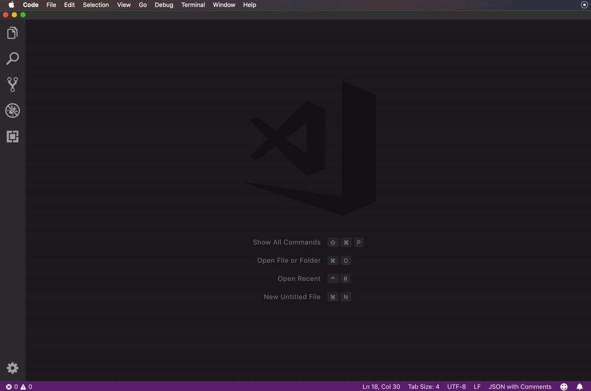
Возможности редактора кода
В этом разделе мы быстро рассмотрим различные удобные для разработчика функции, которые предоставляет Visual Studio Code, чтобы помочь вам писать более быстрый и более понятный код.
Intellisense
Это популярная функция, также известная как «автозавершение кода» или автозаполнение. VS Code «из коробки» предоставляет Intellisense для:
При вводе кода появится всплывающее окно со списком возможных вариантов. Чем больше вы печатаете, тем короче список. Вы можете нажать Enter или, Tab когда нужное ключевое слово будет выделено, для автозаполнения кода. Нажатие Esc удалит всплывающее окно. Вставка . в конце ключевого слова или нажатие Ctrl + Space приведет к появлению всплывающего окна IntelliSense.
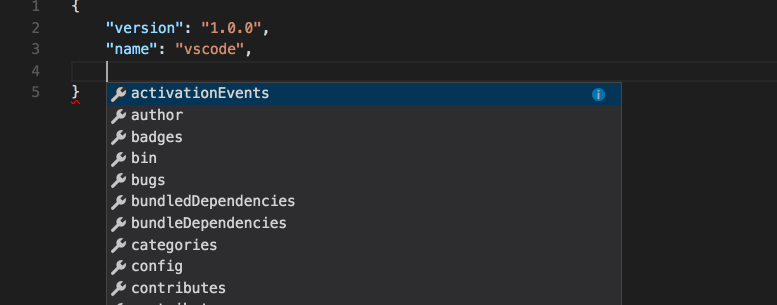
Если вы работаете с языком, который не поддерживается сразу после установки, вы можете установить языковое расширение из marketplace, чтобы активировать IntelliSense для нужного языка программирования.
Снипеты
Ввод повторяющегося кода, такого как операторы if, циклы for и объявление компонентов, может быть немного утомительным. Вы можете копировать и вставлять код, чтобы работать быстрее. К счастью, Visual Studio Code предлагает функцию Snippets, которая называется просто шаблонами кода. Например, вместо ввода console.log просто введите log, и IntelliSense предложит вам вставить фрагмент.
Есть много фрагментов, к которым вы можете получить доступ, если вы запомнили сокращение или ключевое слово, которое вызывает вставку фрагмента. Поскольку вы новичок в этом, вы можете получить доступ к списку всех фрагментов, доступных через Command Palette > Insert Snippets:
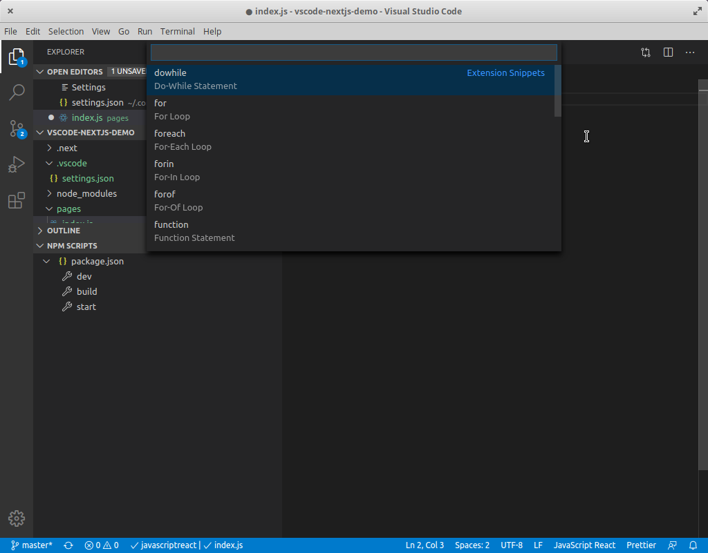
Прокрутите вверх и вниз, чтобы просмотреть весь список. Обратите внимание, что большинство фрагментов имеют табуляции, которые позволяют заменять соответствующие разделы кода при их вставке. Вы можете найти больше расширений фрагментов в marketplace. Вы также можете создать свой собственный.
Форматирование
Часто при наборе или вставке кода из разных источников мы склонны смешивать стили кодирования. Например:
Форматирование важно, так как делает код читаемым. Однако это может занять много времени, когда вы сталкиваетесь с большими разделами неформатированного кода. К счастью, Visual Studio Code может выполнить форматирование для вас с помощью одной команды. Вы можете выполнить команду форматирования через палитру команд. Visual Studio Code поддерживает форматирование для следующих языков из коробки:
Вы можете настроить форматирование кода Visual Studio, изменив следующие параметры на true или false:
Однако встроенные средства форматирования могут не соответствовать вашему стилю кодирования. Если вы работаете с такими фреймворками, как React, Vue или Angular, вы обнаружите, что встроенные средства форматирования имеют тенденцию портить ваш код. Вы можете исправить это, отключив форматирование для определенного языка:
"html.format.enable": false
Тем не менее, лучшее решение - установить расширение для форматирования. Мой любимый - Prettier, поскольку он поддерживает огромное количество языков, включая:
После установки вам нужно установить его как форматировщик по умолчанию:
{
"editor.defaultFormatter": "esbenp.prettierVS Code",
"[javascript]": {
"editor.defaultFormatter": "esbenp.prettierVS Code"
}
}
Также рекомендуется установить пакет prettier локально как зависимость dev:
npm install prettier -D --save-exact
Параметры форматирования по умолчанию, которые применяет Prettier, могут работать для вас. Если нет, вы можете выполнить настройку, создав файл конфигурации .prettierrc в корне вашего проекта или в вашем домашнем каталоге. Вы можете разместить свои собственные правила форматирования здесь. Вот пример:
{
"trailingComma": "all",
"tabWidth": 2,
"semi": false,
"singleQuote": true
}
Linting
Lint или ЛИНТЕР является инструментом, который анализирует код и проверяет на наличие синтаксических ошибок, проблем стилизации, вызовы на необъявленных переменных, использование устаревших функций, неправильного охвата и многие другие вопросы. Visual Studio Code не поставляется вместе с Linter. Тем не менее, это облегчает настройку для используемого вами языка программирования. Например, если вы работаете над новым проектом Python, вы получите приглашение установить его для вас. Вы также можете открыть панель команд (Ctrl+ Shift+ P) и выбрать команду Python: Select Linter.
Для JavaScript вам нужно установить расширение, такое как ESLint, которое является самым популярным. Это расширение требует, чтобы вы установили ESLint как dev-зависимость. Вам также может понадобиться один или несколько плагинов ESLint, которые помогут вам подобрать стиль и структуру кодирования, которые вы используете.
После того, как вы настроите инструмент linting, VS Code будет автоматически проверять ваш код каждый раз, когда вы сохраняете файл. Вам также следует обновить ваши сценарии package.json, чтобы включить команду для запуска инструмента lint.
Отладка
Если вы используете операторы print для отладки, вы должны прекратить это делать, поскольку есть лучший способ отладки вашего кода. С VS Code вы можете устанавливать точки останова и проверять переменные во время работы вашего кода.
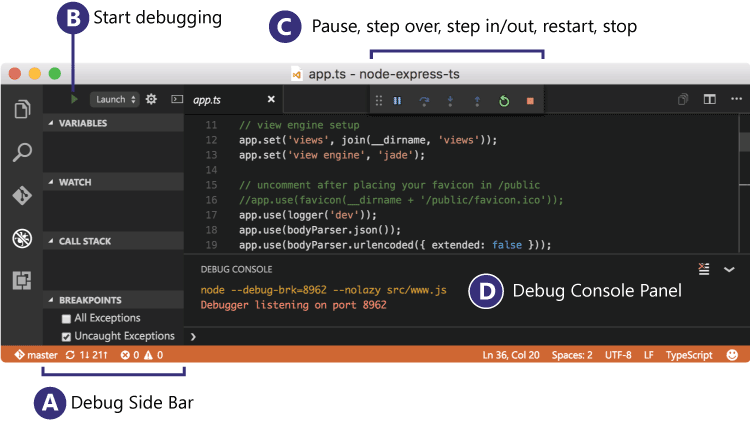
Источник: